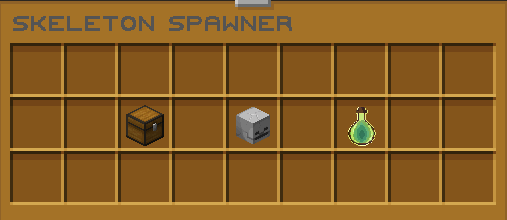

Welcome to the wiki of Cubesia
Everything you need to know about the server, on a single page.
Spawners
Spawner GUI
Every Spawner includes its own management interface, giving you quick access to everything related to your mob farm. The Chest is the main storage, where every item dropped by your mobs is collected automatically.

Storage
The Storage menu includes tools to organize, filter, collect, sell, and control every item produced by your spawner.
- The Cauldron automatically sorts the stored items.
- The Hopper opens the loot filter.
- The Gold Ingot instantly sells every stored item.
Stacking
Spawners can be stacked together to save space. A normal right-click adds one spawner, while Shift + Right-Click adds as many as possible from your inventory.
Silk Touch is not required to break and recover spawners.
Commands
- /afk Teleports you to the AFK zone.
- /home Open the GUI to view, set, and delete your homes.
- /spawn Teleports you to the spawn.
Enchantments
Armor
| Name | Summary | Max Level |
|---|---|---|
| Cold Steel | Applies Mining Fatigue effect to the attacker. | III |
Others
Shulkers
Shulker Boxes can now be opened directly from your inventory, without needing to place them on the ground first.
AFKZone
For every minute spent in the AFK Zone, you receive a random reward.
Use /afk to get there.
You are free to leave the zone whenever you wish.